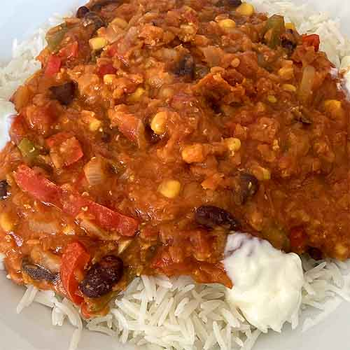

Chilli sin carne

The best meat-free chilli recipe I've encountered. When I gave up eating meat a couple of years ago, I struggled to find a recipe for a vegetarian/vegan chilli that I not only enjoyed eating, but also wanted to make again. After trying a few disappointing ones using soya mince (= ultra-processed food), I found a lentil-based recipe in a German newspaper, which I adapted slightly.
Ingredients
Serves 4 (or 2, if those people are me!)
Difficulty: Easy
- 1 green pepper
- 1 red pepper
- 1 red chilli (but feel free to spice things with multiple habaneros or scotch bonnets etc, depending on what your tongue and digestive system can cope with)
- 1 large onion (erm, or two smaller ones)
- 2 cloves of garlic
- 1 tin of kidney beans
- 1 tin of sweetcorn
- 2 tablespoons of olive oil (or rapeseed oil, sunflower oil etc)
- 250g red lentils
- 4 tablespoons concentrated tomato puree
- 2 tins of chopped tomatoes (or, of course, chop some 'real' tomatoes)
- 1 litre of vegetable stock
- Ground black pepper
- Pinch of cumin powder (or a good shaking, to taste)
Method
- Wash the peppers and chillies, remove the pepper cores and, unless you like your chillis very hot, remove their seeds.
- Peel the onion and garlic and chop into small pieces. (Alternatively, crush the garlic.)
- Rinse the kidney beans and sweetcorn under running water and allow to drain.
- Heat the oil and sauté the onion for a few minutes.
- Add the peppers, chillies, lentils, tomato puree, tinned tomatoes, kidney beans, sweetcorn, ground pepper, cumin powder and vegetable stock and stir well.
- Cover, bring to a boil and then simmer on low/medium heat for 30 minutes or so, until the lentils are soft.
- Serve with basmati rice and a dollop (or two, or three) of sour cream (vegetarian) or soya yoghurt (vegan).
Home